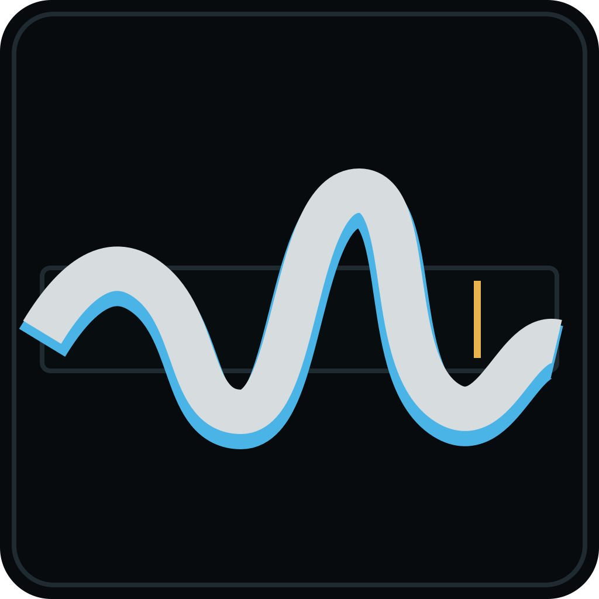
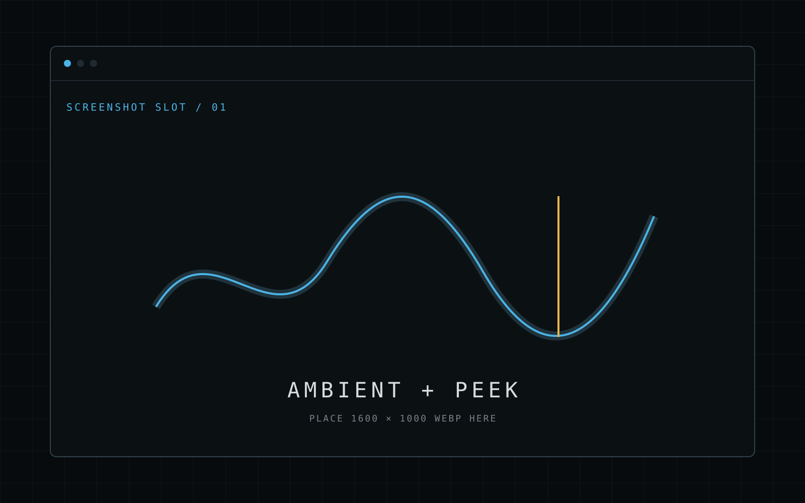
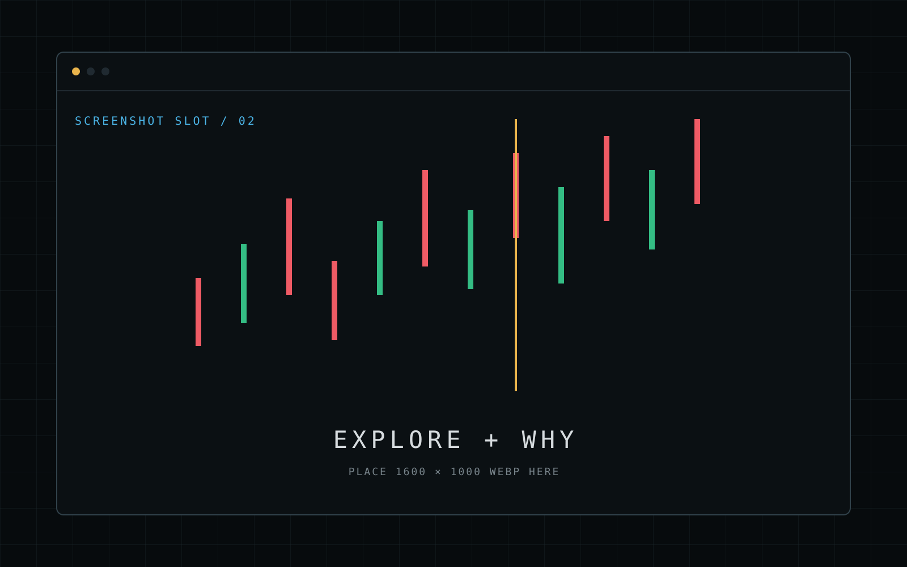
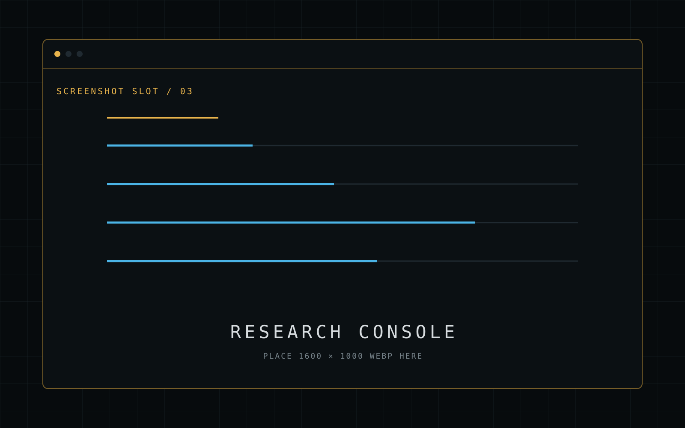

涨了吗？
想知道市场怎么样，按一下 Alt + M。指数、板块和自选就在当前窗口里展开。看完即走，不必打开另一套行情软件。
ALT + M / 一目了然

NAMI NATIVE AGENT MARKET INTERFACE 下载 VSIX01 MARKET, WITHOUT THE CONTEXT SWITCH
不用反复切到行情软件。随口问，也可以用斜杠命令直达行情、研究、选股和盯盘；
深度结合专业金融数据与研究能力。
› /alert 帮我盯一下光模块
02 THREE SIMPLE WAYS TO USE NAMI
想知道市场怎么样，就看一眼；对某个变化有疑问，就直接问；不想一直盯着，就交代 NAMI 帮你留意。
指数、板块和自选就在当前窗口里展开。看完即走，不必打开另一套行情软件。
“电池板块为什么跌了？”“打开奥比中光。”像平常说话一样，直接告诉 NAMI 你想知道什么。
一句“帮我盯一下光模块”，NAMI 会持续留意值得关注的变化，没有变化时保持安静。
03 COMMAND SYSTEM
随口说，NAMI 会理解你的意思；知道自己要做什么时，输入斜杠命令即可直达结果。 命令是专业工作流的快捷入口，不是使用 NAMI 的语法门槛。
COMMANDS ARE SHORTCUTS, NOT RULES/market总结市场与自选/open打开股票、指数或板块/compare对比两条相对走势/why解释选中位置的异动/news查新闻、公告与研报/data查行情、资金与财务/screen用自然语言智能选股/watch管理账户自选/alert创建自然语言盯盘/clear 清空当前对话
/help 查看命令与键盘帮助
TYPE / TO DISCOVER
04 FROM A GLANCE TO AN ANSWER
平时只占状态栏的一小块；想快速了解就展开速览；遇到真正关心的变化，再进入图表和证据。
AMBIENT / 背景态
把关心的指数、板块或股票放在状态栏。市场一直在，但不会占据你的工作区。
PEEK / 速览态
按一下 Alt + M，就能看到指数、关注板块、自选走势和一段市场摘要。
EXPLORE / 探索态
从分时到多周期 K 线，从价格走势到常用指标，需要的细节都在同一个页面里。
WHY / 异动解析
选中分时或 K 线上的位置，NAMI 会结合市场表现、公告和资讯，帮你找到可能相关的证据。
05 NATURAL-LANGUAGE ATTENTION
不用先找证券代码，也不用自己设计阈值。告诉 NAMI“帮我盯一下光模块”，它会理解你关心的范围，持续留意强弱、量能和重要事件。
光模块主题
从一句话找到关注范围强度 / 广度 / 量能
在后台保持关注值得注意的变化
发生了什么 + 为什么已开始关注“光模块”。当前没有需要打断你的变化。
NEXT EVALUATION / BACKGROUND06 NAMI × 金融数据服务
NAMI 把市场数据与金融能力接入同一个上下文。你提出问题，Agent 负责理解金融对象和检索专业金融数据，NAMI 再把结果组织成可以阅读、筛选、导出和继续操作的界面。
/news
/data
/screen
/watch
07 SEE THE PRODUCT
从状态栏速览、K 线研究到高密度信息台，下面将展示 NAMI 在日常使用中的真实样子。

assets/screenshots/ambient-peek.webp

assets/screenshots/explore-why.webp

assets/screenshots/research-console.webp
08 COMMAND WHEN YOU KNOW / ASK WHEN YOU DON'T
名字没输准、问题没说完整，也没关系。NAMI 会理解你想看的证券、板块或主题，把相关行情和信息准备好，再把结果带回图表和页面。
命令是快捷入口，不是使用门槛。
09 USE IT WITH CONFIDENCE
连接你自己的 OpenAI 或兼容模型服务，不被单一服务锁定。
AI 与数据服务密钥保存在 VS Code 的安全存储中，不写进项目、设置文件或日志。
市场问题只携带相关市场信息，不会把编辑器里的源代码发送给模型。
NAMI 帮你整理信息和研究证据，不执行交易，也不承诺预测结果。
10 MARKET WHEN YOU NEED IT
在你的工作流中里随时看市场、问问题、交代盯盘。